Wei Xiao
I am a Postdoc Associate at the MIT Computer Science and Artificial Intelligence Laboratory (since Sep. 2021) advised by Prof. Daniela Rus. I got my Ph.D. degree in Systems Engineering in 2021 at Boston University advised by Prof. Christos G. Cassandras and Prof. Calin Belta.
My research interest includes safety-critical control theory and trustworthy machine learning with applications to robotics and multi-agent systems.
Email: weixy [at] mit (dot) edu [Google Scholar] / [Github] / [LinkedIn]
-
My ambition is to develop a new science of autonomy that integrates intelligence with certifiability. This science will be the cornerstone for a future where AI-enabled robots are an everyday presence, safely and efficiently augmenting human cognitive and physical capabilities. See the figure below for a brief summary of my work.


Recent News (last update: Jan. 2025)
- [05/2025] Our ABNet paper is accepted in ICML 2025.
- [01/2025] Our SafeDiffuser paper is now accepted in ICLR 2025.
- [11/2024] One paper is accepted in Cybernetics and AI.
- [07/2024] Three papers are accepted in CDC 2024.
- [04/2024] Our special session on safety-critical control is available in Annual Reviews in Controls.
- [04/2024] One paper is accepted in ARC 2024.
- [01/2024] Three papers (foundation model driving, swarm robots, autonomous vessels) are accepted in ICRA 2024.
- [01/2024] Two papers regarding optimal control for mixed traffic are accepted in ACC 2024
- [01/2024] One paper of safe control for soft robots is accepted in RoboSoft 2024.
- [01/2024] One paper, secure ontrol for CAVs, is accepted in VehicleSec 2024.
- [12/2023] One paper regarding event/self triggered CBFs for CAVs is accepted in Automatica.
- [11/2023] One paper is accepted in NeurIPS 2023 robot learning workshop.
- [10/2023] One paper is accepted in CoRL 2023 OOD workshop.
- [09/2023] Two papers are accepted in NeurIPS 2023.
- [08/2023] One paper is accepted in CoRL 2023 as an oral paper (6.6%).
- [07/2023] Three papers are accepted in CDC 2023.
- [07/2023] One paper is accepted in ITSC 2023.
- [06/2023] Three papers (one conference, two journals) are accepted to present at IROS 2023.
- [05/2023] One paper is accepted in CCTA 2023, and is selected as the best student paper award finalist (as advisor and co-author).
- [04/2023] Our invariance paper is accepted in ICML 2023.
- [03/2023] One paper about learning stability attention is accepted in L4DC 2023.
- [03/2023] One paper about learning feasibility constraints is accepted in ECC 2023.
- [02/2023] Our BarrierNet paper is accepted in IEEE Transactions on Robotics.
- [02/2023] One paper about cyber-attacks in transportation systems is accepted in VehicleSec 2023.
- [01/2023] One paper about risk metric evaluation is accepted in ICRA 2023.
- [01/2023] One paper regarding game theoretic planning is accepted in RAL.
- [12/2022] Our BarrierNet paper is conditionally accepted in IEEE Transactions on Robotics.
- [10/2022] Our paper using optimal control for CAVs in roundabouts is accepted in T-ITS.
- [08/2022] Our TAC paper regarding safety guarantees under unknown dynamics is now available.
- Wei Xiao, Christos Cassandras, and Calin Belta, Safe Autonomy with Control Barrier Functions: Theory and Applications, Springer, 2023, ISBN: 978-3-031-27576-0, link
Book
Selected Journal Papers
 |
BarrierNet: Differentiable Control Barrier Functions for Learning of Safe Robot Control
Wei Xiao*, Tsun-Hsuan Wang*, Ramin Hasani, Makram Chahine, Alexander Amini, Xiao Li, and Daniela Rus IEEE Transactions on Robotics (TRO), 2023 arXiv 1, arXiv 2, code |
| 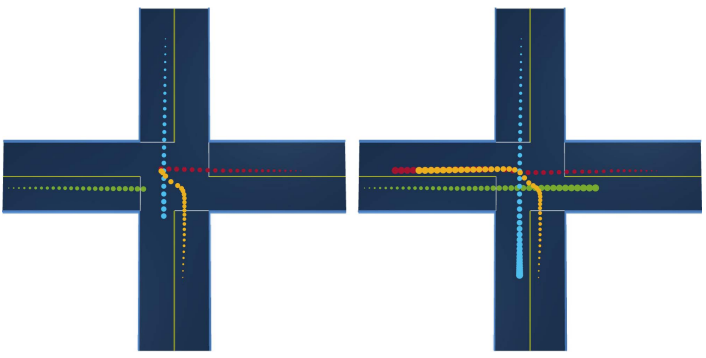 |
Intention Communication and Hypothesis Likelihood in Game-Theoretic Motion Planning
Makram Chahine, Roya Firoozi, Wei Xiao, Mac Schwager, and Daniela Rus IEEE Robotics and Automation Letters (RAL), 2023 arXiv |
{kind=link}
 |
Event-Triggered Control for Safety-Critical Systems With Unknown Dynamics
Wei Xiao, Calin Belta, and Christos G. Cassandras IEEE Transactions on Automatic Control (TAC), 2023 arXiv, Bibtex |
 |
Adaptive Control Barrier Functions
Wei Xiao, Calin Belta, and Christos G. Cassandras IEEE Transactions on Automatic Control (TAC), 2022 arXiv, Bibtex |
 |
High Order Control Barrier Functions
Wei Xiao and Calin Belta IEEE Transactions on Automatic Control (TAC), 2022 arXiv, Bibtex |
 |
Sufficient Conditions for Feasibility of Optimal Control Problems Using Control Barrier Functions
Wei Xiao, Calin Belta, Christos G Cassandras Automatica, 2022 arXiv, Bibtex |
|
Bridging the Gap between Optimal Trajectory Planning and Safety-Critical Control with Applications to Autonomous Vehicles
Wei Xiao, Christos G. Cassandras and Calin Belta Automatica, 2021 Bibtex |
{kind=link}
 |
Decentralized optimal merging control for connected and automated vehicles with safety constraints guarantees
Wei Xiao and Christos G. Cassandras Automatica, 2021 arXiv, Bibtex |
 |
Decentralized Time and Energy-Optimal Control of Connected and Automated Vehicles in a Roundabout with Safety and Comfort Guarantees
Kaiyuan Xu, Christos G Cassandras, and Wei Xiao IEEE Transactions on Intelligent Transportation Systems (T-ITS), 2022 Bibtex |
 |
A General Framework for Decentralized Safe Optimal Control of Connected and Automated Vehicles in Multi-Lane Intersections
Huile Xu, Wei Xiao, Christos G Cassandras, Yi Zhang, Li Li IEEE Transactions on Intelligent Transportation Systems (T-ITS), 2022 arXiv, Bibtex |
Selected Conference Papers
 |
On the Forward Invariance of Neural ODEs
Wei Xiao, Tsun-Hsuan Wang, Ramin Hasani, Mathias Lechner, Yutong Ban, Chuang Gan and Daniela Rus International Conference on Machine Learning (ICML), 2023 arXiv, Website, Bibtex |
| 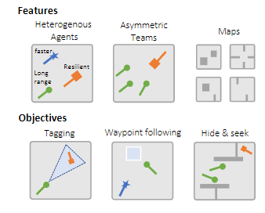 |
Gigastep - One Billion Steps per Second Multi-agent Reinforcement Learning
Mathias Lechner, Lianhao Yin, Tim Seyde, Tsun-Hsuan Wang, Wei Xiao, Ramin Hasani, Joshua Rountree and Daniela Rus. Advances in Neural Information Processing Systems (NeurIPS), 2023 |
{kind=link}
| 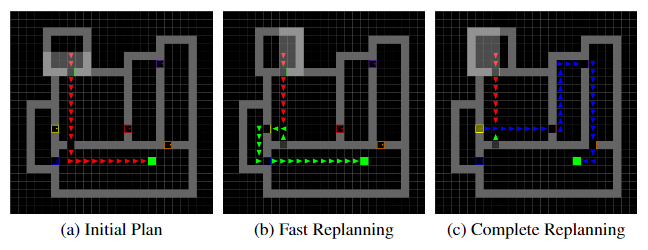 |
Adaptive Online Replanning with Diffusion Models
Siyuan Zhou, Yilun Du, Shun Zhang, Mengdi Xu, Yikang Shen, Wei Xiao, Dit-Yan Yeung, Chuang Gan. Advances in Neural Information Processing Systems (NeurIPS), 2023 |
{kind=link}
| 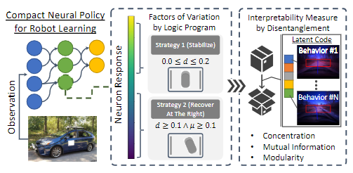 |
Measuring Interpretability of Neural Policies of Robots with Disentangled Representation
Tsun-Hsuan Wang, Wei Xiao, Tim Seyde, Ramin Hasani and Daniela Rus. 7th Annual Conference on Robot Learning (CoRL, Oral, 6.6%), 2023 OpenReview, arXiv |
{kind=link}
| 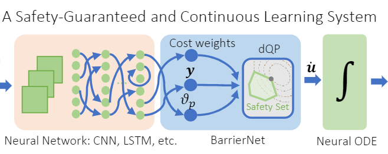 |
Safe Neural Control for Non-Affine Control Systems with Differentiable Control Barrier Functions
Wei Xiao, Ross Allen and Daniela Rus. 62nd IEEE Conference on Decision and Control (CDC), 2023 arXiv |
{kind=link}
| 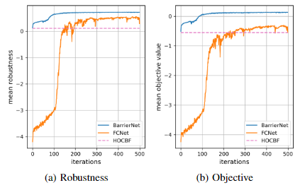 |
Learning Robust and Correct Controllers from Signal Temporal Logic Specifications Using BarrierNet
Wenliang Liu, Wei Xiao and Calin Belta. 62nd IEEE Conference on Decision and Control (CDC), 2023 arXiv |
{kind=link}
| 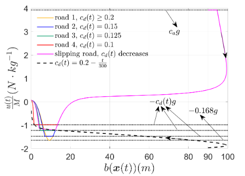 |
Auxiliary-Adaptive Control Barrier Functions for Safety Critical Systems
Shuo Liu, Wei Xiao and Calin Belta. 62nd IEEE Conference on Decision and Control (CDC), 2023 arXiv |
{kind=link}
| 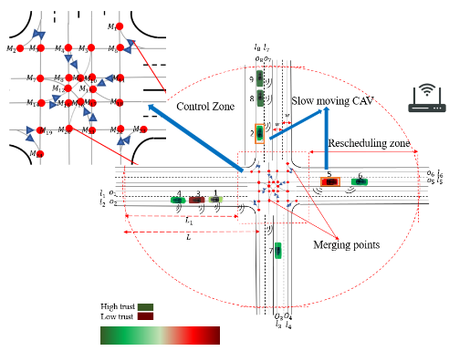 |
Trust-Aware Resilient Control and Coordination of Connected and Automated Vehicles
HM Ahmad, Ehsan Sabouni, Wei Xiao, Christos G Cassandras and Wenchao Li. IEEE International Intelligent Transportation Systems Conference (ITSC), 2023 arXiv |
{kind=link}
| 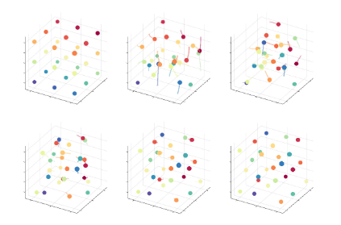 |
Local Non-Cooperative Games with Principled Player Selection for Scalable Motion Planning
Makram Chahine, Roya Firoozi, Wei Xiao, Mac Schwager and Daniela Rus. IEEE/RSJ International Conference on Intelligent Robots and Systems (IROS), 2023 |
{kind=link}
| 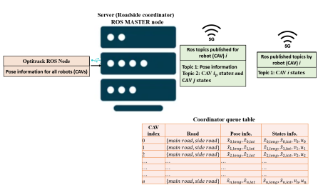 |
Optimal control of connected automated vehicles with event-triggered control barrier functions: a test bed for safe optimal merging
Ehsan Sabouni, HM Sabbir Ahmad, Wei Xiao, Christos G Cassandras and Wenchao Li. IEEE Conference on Control Technology and Applications (CCTA), 2023 (Outstanding Student Paper Award, Best Student Paper Award Finalist) arXiv |
{kind=link}
| 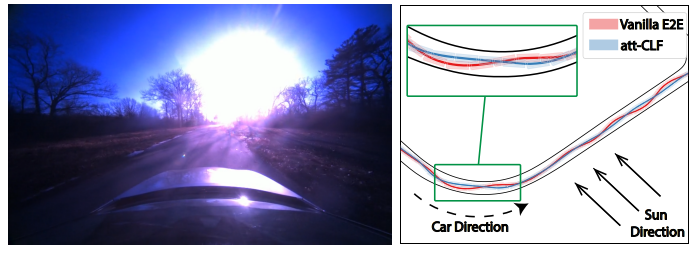 |
Learning Stability Attention in Vision-based End-to-end Driving Policies
Tsun-Hsuan Wang*, Wei Xiao*, Makram Chahine, Alexander Amini, Ramin Hasani, and Daniela Rus Learning for Dynamics and Control (L4DC), 2023 arXiv, Bibtex |
{kind=link}
| 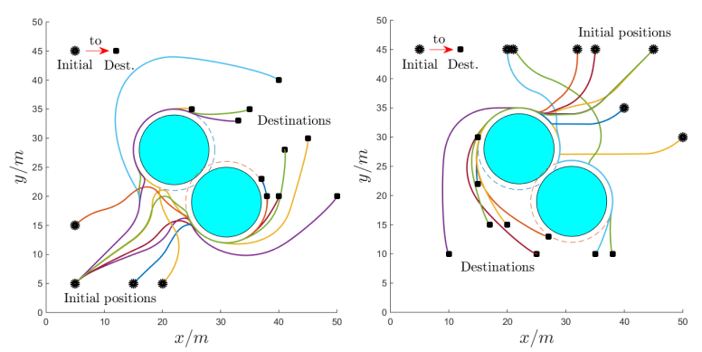 |
Learning Feasibility Constraints for Control Barrier Functions
Wei Xiao, Christos G Cassandras, and Calin A Belta In Proc. of the European Control Conference (ECC), 2023 arXiv, Bibtex |
{kind=link}
| 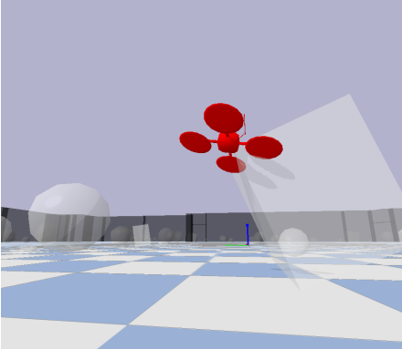 |
Learned Risk Metric Maps for Kinodynamic Systems
Ross Allen, Wei Xiao, and Daniela Rus In Proc. of the International Conference on Robotics and Automation (ICRA), 2023 arXiv, Bibtex |
{kind=link}
| 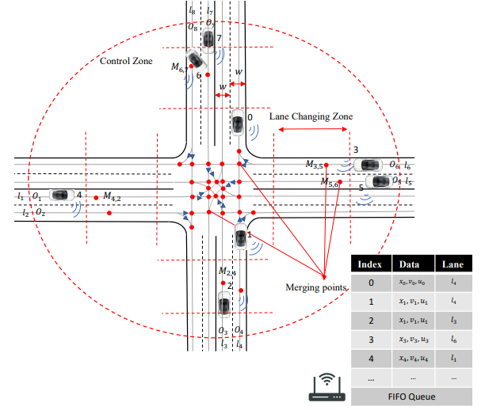 |
Evaluations of Cyberattacks on Cooperative Control of Connected and Autonomous Vehicles at Bottleneck Points
HM Sabbir Ahmad, Ehsan Sabouni, Wei Xiao, Christos G Cassandras, and Wenchao Li VehicleSec, 2023 paper, Bibtex |
{kind=link}
 |
Control Barrier Functions for Systems with Multiple Control Inputs
Wei Xiao, Calin Belta, Christos G. Cassandras and Daniela Rus In Proc. of the American Control Conference (ACC), 2022 arXiv, Bibtex |
|
Decentralized optimal merging control for connected and automated vehicles on curved roads
Wei Xiao and Christos G. Cassandras In Proc. of 60th IEEE Conference on Decision and Control (CDC), 2021 Bibtex |
{kind=link}
|
Event-triggered safety-critical control for systems with unknown dynamics
Wei Xiao, Calin Belta, and Christos G. Cassandras In Proc. of 60th IEEE Conference on Decision and Control (CDC), 2021 Bibtex |
{kind=link}
 |
Rule-based Optimal Control for Autonomous Driving
Wei Xiao, Noushin Mehdipour, Anne Collin, Amitai Bin-Nun, Emilio Frazzoli, Radboud Tebbens and Calin Belta 12th ACM/IEEE International Conference on Cyber-Physical Systems (ICCPS), 2021 (Best Paper Award Finalist) arXiv, Bibtex |
 |
Feasibility guided learning for constrained optimal control problems
Wei Xiao, Calin Belta, and Christos G. Cassandras In Proc. of 59th IEEE Conference on Decision and Control (CDC), 2020 (Outstanding Student Paper Award, Best Student Paper Award Finalist) arXiv, Bibtex |
 |
Control barrier functions for systems with high relative degree
Wei Xiao and Calin Belta In Proc. of 58th IEEE Conference on Decision and Control (CDC), 2019 (Roberto Tempo Best CDC Paper Award Nominee) arXiv, Bibtex |
 |
Conditions for improving the computational efficiency of decentralized optimal merging controllers for connected and automated vehicles
Wei Xiao and Christos G. Cassandras In Proc. of 58th IEEE Conference on Decision and Control (CDC), 2019 Bibtex |
 |
Decentralized merging control in traffic networks: A control barrier function approach
Wei Xiao, Calin Belta, and Christos G. Cassandras In Proc. of 10th ACM/IEEE International Conference on Cyber-Physical Systems (ICCPS), 2019 Bibtex , code |
-
2017.9 - 2021.8, Boston University
Ph.D in Systems Engineering with honors -
2013.9 - 2016.6, University of Chinese Academy of Sciences (Institute of Automation, Chinese Academy of Sciences)
M.Sc in Robotics -
2009.9 - 2013.6, University of Science and Technology Beijing
B.Sc. in Mechanical Engineering with honors
Education
- IEEE CCTA 2023, Best Student Paper Award Finalist (as advisor and co-author), 5/2023
- Boston University Outstanding Dissertation Award, 5/2022
- ACM/IEEE ICCPS 2021, Best Paper Award Finalist, 5/2021
- IEEE CDC 2020, Outstanding Student Paper Award, 12/2020
- IEEE CDC 2020, Roberto Tempo Best CDC Paper Award Nominee, 12/2020
- Boston University PhD Distinguished Fellowship Award, 9/2017
- iQIYI Young Staff Award, 1/2017
- UCAS National Graduate Scholarship, 5/2015
- Beijing Outstanding Undergraduate Award, 6/2013
Selected Honors
-
Vehicle operation using behavioral rule checks
Radboud Duintjer Tebbens, Calin Belta, Hsun-Hsien Chang, Amitai Bin-Nun, Anne Collin, Noushin Mehdipour, Wei Xiao
US Patent App. 17/497,245, 2022
Patent
-
Funded
Capgemini-MIT Research Project on Trustworthy Machine Learning, 10/2021-10/2024
Toyota Research Institute Research Project on Safe Autonomous Driving, 09/2022-09/2024
Grants Writeup
-
Reviewing
Journals: IEEE-TAC, Automatica, IEEE-TRO, L-CSS, RAL, IEEE T-ITS, etc.
Conferences: ICML(2023), NeurIPS (2022-2023), ICRA (2022-2024), CDC (2019-2023), ACC (2019-2024), etc. -
Organization and Membership
Guest Editor of Annual Reviews in Control, Special Session on Safety-critical Control for Multi-agent Systems, 08/2023 - Present
Chair of Lyapunov Methods section at ACC 2022, Atlanta, Georgia
Technical committee of IEEE-CSS on Smart Cities since 9/2021
Professional Activity
-
Teaching Assistant (weekly lectures)
EC103-Linear Algebra, Boston University, Spring 2020
EC103-Linear Algebra, Boston University, Spring 2019 -
Lectures
EC700-Safe Autonomy, Boston University, 4/10/2023
EC700-Cyberphysical Systems and Autonomous Vehicles, Boston University, 3/22/2021
High order control barrier functions, Department of Automation, University of Science and Technology Beijing, 12/5/2019
Teaching and Lectures
Misc Projects
 |
Manipulator State Grid of China |
 |
Quadruped Robot IA, CAS |
| |
Autonomous Driving MIT |